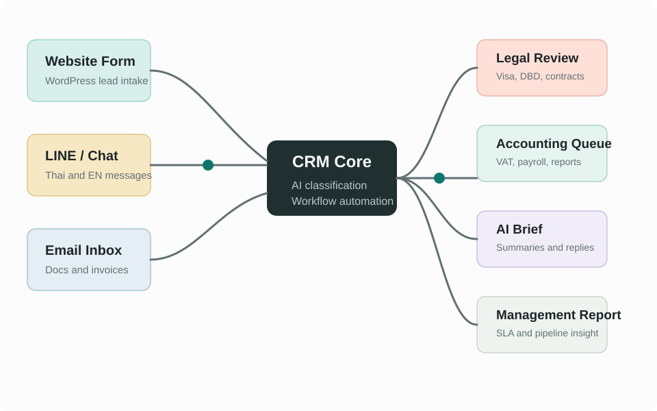

Internal system mockup
ระบบติดตามลูกค้า งานกฎหมาย บัญชี และ Automation
Operations queue
งานที่ควรจัดการวันนี้
Case intake
ช่องทางรับลูกค้า
AI แนะนำให้ส่ง follow-up ภาษาอังกฤษให้กลุ่ม Website lead ภายใน 2 ชั่วโมง เพราะ conversion สูงสุดในสัปดาห์นี้
CRM pipeline
ลูกค้าและสถานะงาน
No-code workflow
Automation ที่เหมาะกับบริษัท
System map
ภาพรวมการเชื่อมต่อ

AI assistant
สร้าง brief ให้ทีมจากข้อมูล CRM
เลือกเคสแล้วกด Generate brief เพื่อจำลองการสรุปข้อมูลลูกค้า งานค้าง เอกสารที่ต้องขอ และข้อความ follow-up สำหรับทีมไทย/อังกฤษ
Prompt controls